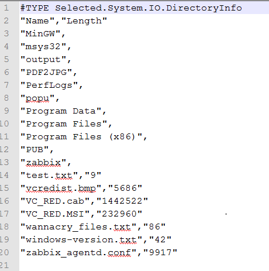

Trabajando con ficheros CSV
Exportar reportes o tablas de datos a CSV (para trabajar a su vez después en Excel por ejemplo) es una operación muy común, en PS tenemos el cmdlet Export-Csv, el cmdlet recibe de una tubería (pipe) y procesa las propiedades de los objetos pasados y genera un fichero CSV de salida en línea sucesivas.
Un ejemplo muy sencillo, obtenemos los procesos en ejecución y los guardamos en un fichero en la misma ruta de ejecución del script:
PS> Get-Process | Export-Csv -Path "processes.csv"
El siguiente ejemplo es más avanzado, filtramos las propiedades del objeto que queremos exportar a CSV con Select-Object y el parámetro -Property:
PS> dir C:\ | Select-Object -Property Name,Length | Export-Csv C:\temp\FileList.csv
PS> Get-Content C:\temp\FileList.csv
Podemos abrir facilmente el fichero en Excel (o el programa que tengamos configurado como predeterminado para esa tipo de archivos) con el siguiente comando:
PS> Invoke-Item C:\temp\FileList.csv
Importar desde un CSV

Get-Content lee el contenido del fichero interpretandolo como cadenas de texto, si queremos trabajar con colecciones de registros usaremos Import-CSV, facilmente podemos volcarlo a una variable y recorrer su contenido.
PS> $MyFileList = Import-CSV C:\temp\FileList.csv
PS> $MyFileList
PS> $MyFileList | Get-Member
PS> ForEach ($Item in $MyFileList) {"Name:"+$Item.("Name") }
PS> ForEach ($Item in $MyFileList) {"Name:"+$Item.("Length") }
O acceder a cada objeto del resultado por su índice:
PS> Write-Host $MyFileList[0].Name
Importar como objetos [casting propiedades]
Fuente: Import-CSV-Obj.ps1
dir C:\ | Select-Object -Property Name,Length | Export-Csv .\FileList.csv
$MyFileList = Import-CSV C:\temp\FileList.csv
$MyFileList | ForEach-Object {
#Cast properties
$_Name = [string]$_.Name
$_Lenght = [int]$_.Length
# Escribir objeto
$_
}
Enlaces externos
- Export-Csv - Microsoft Docshttps://docs.microsoft.com/en-us/powershell/module/microsoft.powershell.utility/export-csv?view=powershell-6.
- Export-Csv - PowerShell - SS64.com.
- Piping Files and Folders.
- Powershell_> Select-string el grep de PS.
- Get-Process - Microsoft Docs: Gets the processes that are running on the local computer..